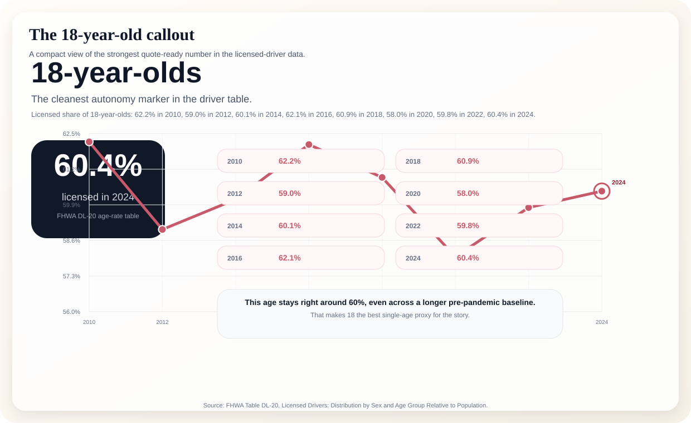
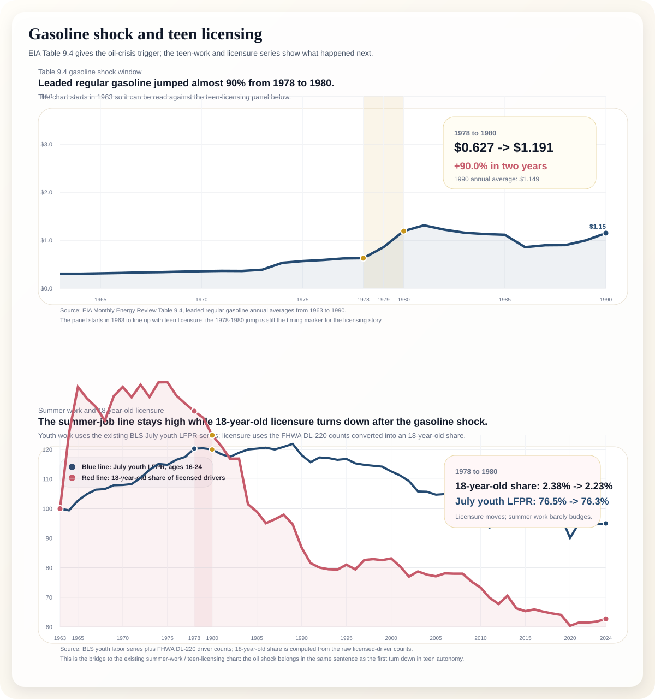
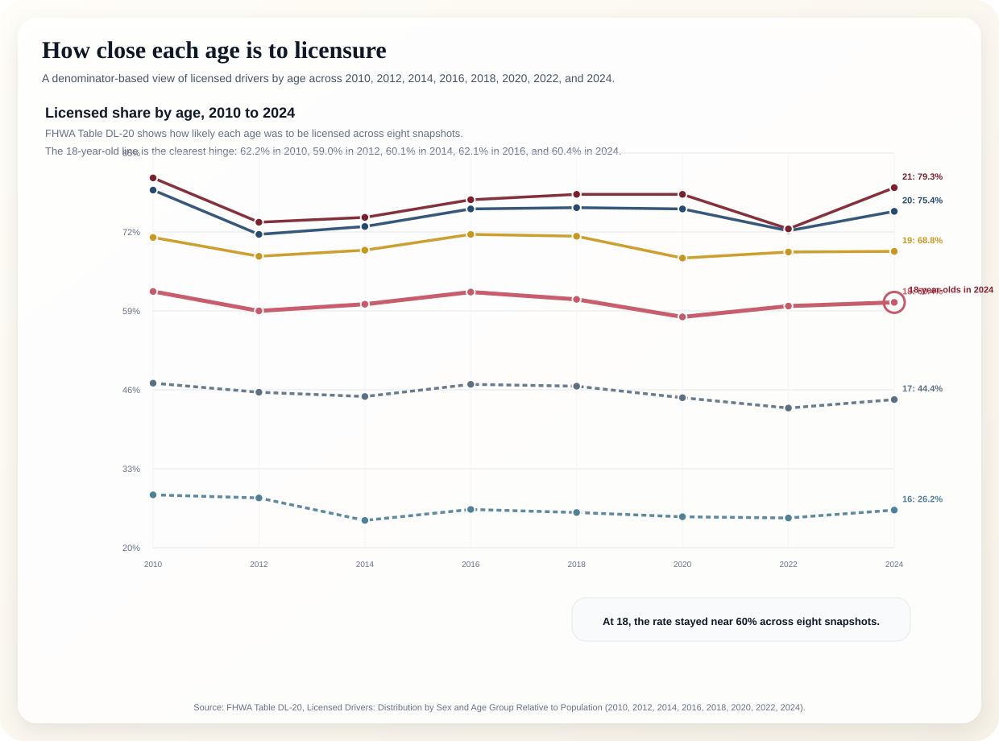
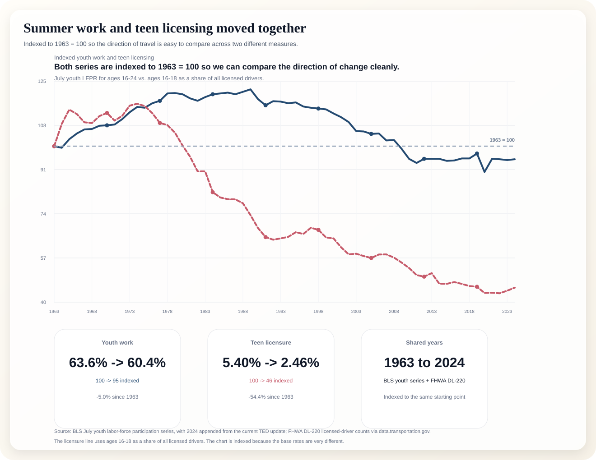
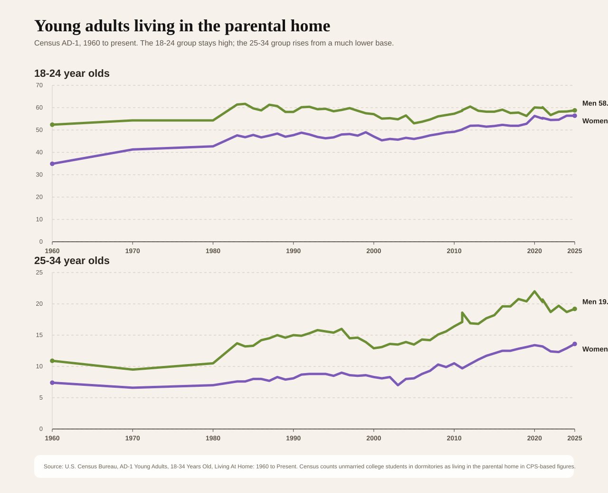
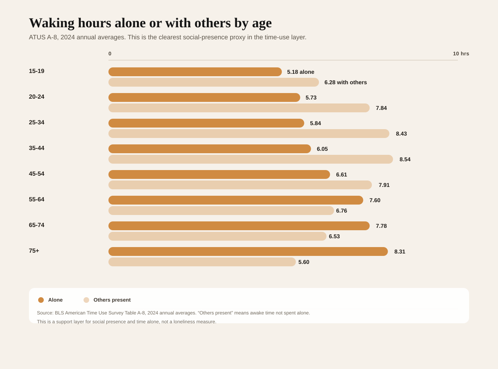

The old route into adulthood used to be legible: get a license, get a summer job, start moving on your own. The story in this package is that those steps still exist, but they stopped lining up the way they used to. The break shows up long before the pandemic, and the 18-year-old mark is where it reads most cleanly.
“At 18, adulthood got harder to reach.” That is the headline version because it tells the reader what changed, who it changed for, and why the story matters.
This is the first chart a reporter should see. It gives the story its anchor age and its most quote-ready number.

This should be the dominant image in the package. It connects the historical trigger, the work series, and the licensure series in one frame.

This chart shows the 18-year-old line inside the broader 2010-to-2024 age-rate picture.

This is the clean companion chart for the summer-work and licensure story.

The Census long trend is the strongest downstream proof point.

ATUS adds social texture without overstating loneliness.

The 18-year-old line is the clearest proof that a basic adult rehearsal became less predictable.
Teen work stayed present while the licensing path started to bend, which is what makes the bridge chart so strong.
The long Census trend says adulthood is arriving later in the housing story, not just the labor story.
ATUS is the support layer: it shows the shape of daily life, but it is not a loneliness claim.